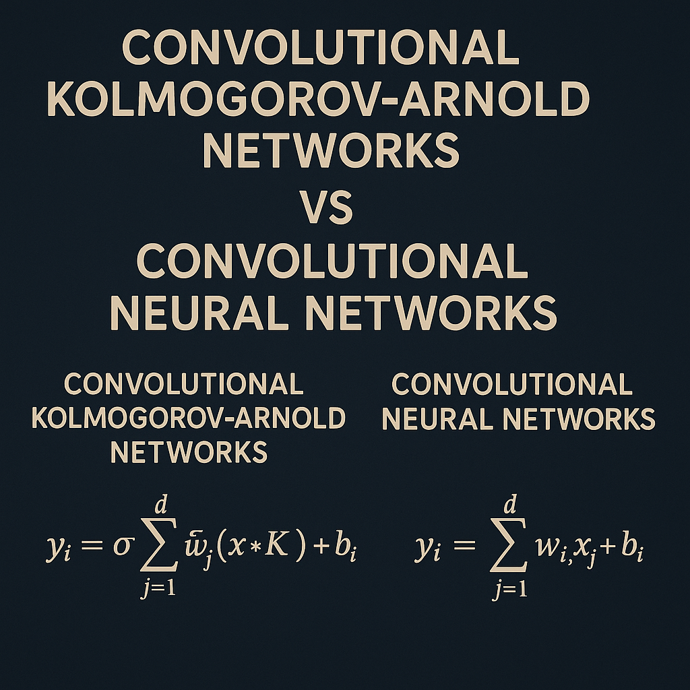

Introduction
The landscape of deep learning has been revolutionized by Convolutional Neural Networks (CNNs), which have dominated computer vision tasks for over a decade. However, a new paradigm has emerged that challenges the fundamental assumptions of traditional neural architectures: Convolutional Kolmogorov-Arnold Networks (Convolutional KANs). This innovative approach represents a significant departure from conventional neural network design, offering enhanced parameter efficiency, interpretability, and expressive power.
Theoretical Foundation
The Kolmogorov-Arnold Representation Theorem
The theoretical foundation of KANs lies in the Kolmogorov-Arnold representation theorem, which states that any multivariate continuous function on a bounded domain can be represented as a finite composition of continuous functions of a single variable and the binary operation of addition. This mathematical principle fundamentally challenges the traditional multi-layer perceptron (MLP) approach and provides the basis for a new class of neural networks.
The theorem can be formally expressed as:
\[ f(x_1, x_2, \ldots, x_n) = \sum_{q=0}^{2n} \Phi_q\left( \sum_{p=1}^{n} \phi_{q,p}(x_p) \right) \]
Where \(\phi_{i}\) and \(\phi_{i,j}\) are continuous univariate functions, and f is the multivariate function being approximated.
Architectural Differences
The fundamental architectural difference between traditional neural networks and KANs lies in the placement and nature of activation functions:
- Traditional MLPs/CNNs: Fixed activation functions on nodes (neurons), with linear weights on edges
- KANs: Learnable activation functions on edges (weights), with no linear weights at all
Convolutional Neural Networks: The Established Paradigm
Architecture Overview
CNNs have been the backbone of computer vision applications since their breakthrough in the early 2010s. The typical CNN architecture consists of:
- Convolutional Layers: Apply fixed-weight kernels with linear transformations
- Activation Functions: Non-linear functions (ReLU, sigmoid, tanh) applied to neurons
- Pooling Layers: Downsample feature maps to reduce computational complexity
- Fully Connected Layers: Dense layers for final classification or regression
Key Characteristics
- Parameter Sharing: Convolutional kernels share weights across spatial locations
- Translation Invariance: Ability to detect features regardless of their position in the input
- Hierarchical Feature Learning: Progressive abstraction from low-level to high-level features
- Fixed Activation Functions: Predetermined non-linear functions that remain constant during training
Limitations
Despite their success, CNNs face several inherent limitations:
- Parameter Inefficiency: Large numbers of parameters required for complex tasks
- Limited Interpretability: Black-box nature makes understanding difficult
- Fixed Representational Capacity: Predetermined activation functions limit adaptability
- Scaling Challenges: Performance improvements often require significantly larger models
Convolutional Kolmogorov-Arnold Networks: The New Paradigm
Architecture Innovation
Convolutional KANs represent a revolutionary approach to neural network design by replacing traditional fixed-weight kernels with learnable non-linear functions. The key innovations include:
- Spline-Based Convolutional Layers: Replace fixed linear weights with learnable spline functions
- Edge-Based Activation: Activation functions are learned on the connections between neurons
- Adaptive Kernel Functions: Convolutional operations with learnable, non-linear transformations
- Flexible Representational Power: Ability to adapt the network’s fundamental computational primitives
Technical Implementation
In Convolutional KANs, every weight parameter is replaced by a univariate function parametrized as a B-spline. The spline functions provide:
- Continuous Differentiability: Smooth gradients for effective backpropagation
- Local Control: Ability to modify function behavior in specific regions
- Efficient Representation: Compact parametrization of complex functions
- Numerical Stability: Well-conditioned optimization properties
Architectural Flexibility
The Convolutional KAN architecture allows for various configurations:
- Hybrid Approaches: Combination of KAN convolutional layers with traditional MLPs
- Full KAN Networks: Complete replacement of traditional layers with KAN equivalents
- Scalable Design: Adaptable to different problem complexities and computational constraints
Comparative Analysis
Parameter Efficiency
One of the most significant advantages of Convolutional KANs is their parameter efficiency. Research has demonstrated that Convolutional KANs require significantly fewer parameters compared to traditional CNNs while maintaining or improving performance. This efficiency stems from:
- Learnable Function Approximation: Spline-based functions can represent complex transformations with fewer parameters
- Adaptive Representation: Network can learn optimal activation functions for specific tasks
- Reduced Redundancy: Elimination of fixed linear weights reduces parameter overhead
Expressive Power
Convolutional KANs offer superior expressive power through:
- Adaptive Activation Functions: Ability to learn task-specific non-linearities
- Enhanced Function Approximation: Theoretical foundation in universal approximation
- Flexible Computational Primitives: Learnable spline functions provide greater representational capacity
Interpretability
KANs provide enhanced interpretability compared to traditional CNNs:
- Visualizable Functions: Learned spline functions can be directly visualized and analyzed
- Human Interaction: Easier to understand and modify network behavior
- Mathematical Transparency: Clear mathematical foundation enables better analysis
Performance Characteristics
Empirical evaluations have shown that Convolutional KANs can achieve:
- Comparable or Superior Accuracy: Match or exceed CNN performance on various tasks
- Faster Neural Scaling Laws: More efficient scaling with increased model complexity
- Better Generalization: Improved performance on unseen data
Practical Applications and Limitations
Suitable Applications
Convolutional KANs are particularly well-suited for:
- Computer Vision Tasks: Image classification, object detection, segmentation
- Pattern Recognition: Complex pattern matching with adaptive feature extraction
- Scientific Computing: Problems requiring interpretable and efficient models
- Resource-Constrained Environments: Applications with limited computational resources
Current Limitations
Despite their advantages, Convolutional KANs face certain challenges:
- Computational Complexity: Spline function evaluation may increase computational overhead
- Training Complexity: More complex optimization landscape due to learnable activation functions
- Limited Ecosystem: Fewer available tools and implementations compared to CNNs
- Scaling Challenges: Performance on very large-scale problems remains to be fully validated
Implementation Considerations
Training Strategies
Effective training of Convolutional KANs requires:
- Careful Initialization: Proper initialization of spline parameters
- Adaptive Learning Rates: Different learning rates for different parameter types
- Regularization Techniques: Preventing overfitting in the learnable activation functions
- Numerical Stability: Ensuring stable spline function evaluation
Hyperparameter Tuning
Key hyperparameters include:
- Spline Order: Degree of the B-spline basis functions
- Grid Size: Number of control points for spline functions
- Regularization Strength: Balance between fitting and smoothness
- Learning Rate Schedules: Optimization strategy for different parameter types
Future Directions and Research Opportunities
Emerging Research Areas
- Hybrid Architectures: Combining KANs with other neural network paradigms
- Specialized Applications: Domain-specific adaptations of Convolutional KANs
- Optimization Techniques: Novel training methods for improved efficiency
- Theoretical Analysis: Deeper understanding of KAN properties and capabilities
Potential Developments
- Hardware Acceleration: Specialized hardware for efficient KAN computation
- AutoML Integration: Automated design and optimization of KAN architectures
- Large-Scale Applications: Scaling to very large datasets and complex problems
- Transfer Learning: Adapting pre-trained KAN models to new tasks
Conclusion
Convolutional Kolmogorov-Arnold Networks represent a paradigm shift in neural network design, offering significant advantages in parameter efficiency, interpretability, and expressive power compared to traditional CNNs. While CNNs have proven their worth over the past decade, Convolutional KANs provide a compelling alternative that addresses many of the limitations of traditional approaches.
The key advantages of Convolutional KANs include their theoretical foundation in the Kolmogorov-Arnold representation theorem, enhanced parameter efficiency, superior interpretability, and adaptive representational capacity. However, challenges remain in terms of computational complexity, training strategies, and large-scale validation.
As research continues to advance, Convolutional KANs are poised to become increasingly important in the deep learning landscape, particularly for applications requiring efficient, interpretable, and high-performance neural networks. The choice between CNNs and Convolutional KANs will ultimately depend on specific application requirements, computational constraints, and the importance of interpretability in the given domain.
The future of computer vision and deep learning may well be shaped by the continued development and adoption of Kolmogorov-Arnold Networks, marking a new chapter in the evolution of artificial intelligence architectures.